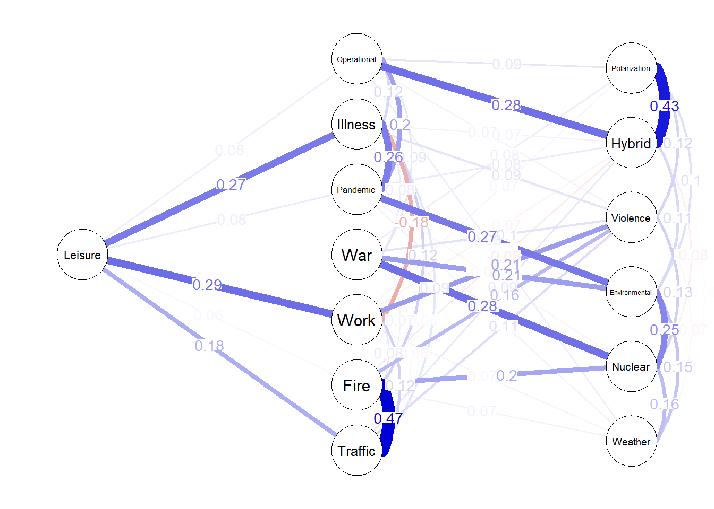
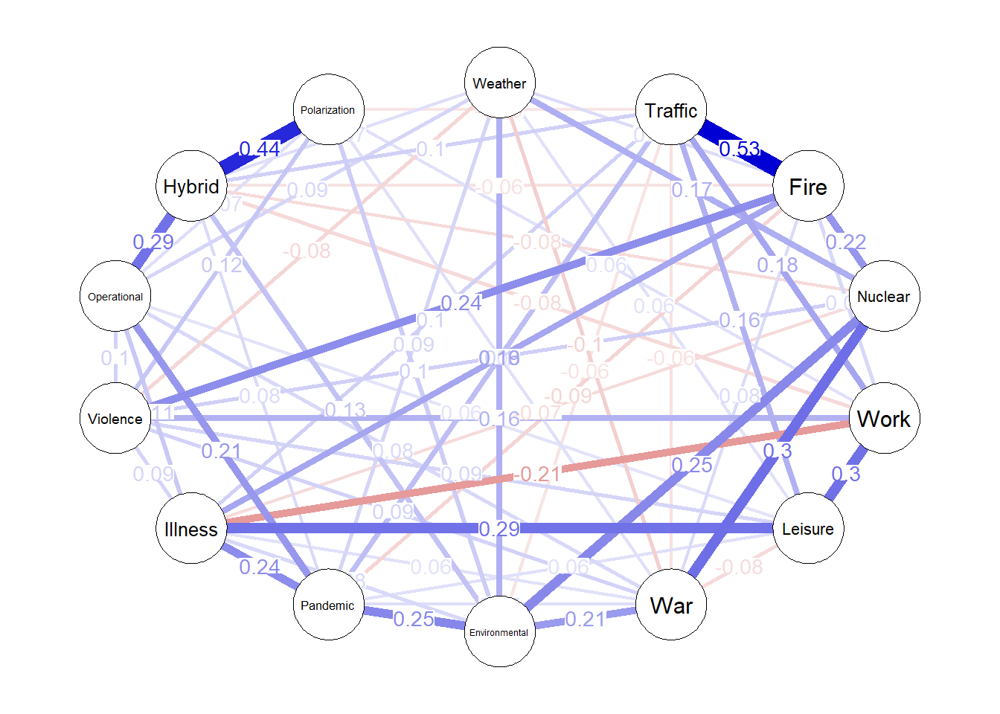
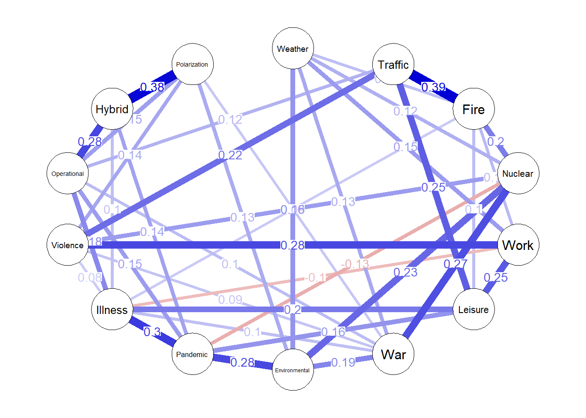

Code
source("prerender.R")We chose to model a Gaussian graphical model (GGM) using the ggmModSelect model search algorithm (Foygel & Drton, 2010; Epskamp et al., 2012). The algorithm uses a starting point selected with graphical least absolute shrinkage and selection operator (GLASSO) regression, after which it searches the model space by minimising the Bayesian Information Criterion (BIC; see Blanken, Isvoranu & Epskamp, 2021: pp. 118-120).
The algorithm has been shown to present high sensitivity (true positive detection rate) and specificity (true negative detection rate), with the main drawback being a slow calculation time (Blanken, Isvoranu & Epskamp, 2021: pp. 118-120). However, simulation studies have shown that, at lower sample sizes (e.g., N = 300), sensitivity suffers a drop and the graphical model becomes more difficult to interpret (Blanken, Isvoranu & Epskamp, 2021: p. 125; Isvoranu & Epskamp, 2021). Even though regularization methods may be more preferable at lower sample sizes, we opt to use the same modelling algorithm for both the main network model and the later comparative models, to ensure the validity of comparing models across analyses.
Because our risk perception variables are ordered categorical data, we implement the ggmModSelect algorithm using polychoric correlations - a method that attempts to estimate an underlying continuity beneath Likert-type measurements (Olsson, 1979; Epskamp & Fried, 2018). This method may be more unstable for low sample sizes as well as lead to conservative estimates (Blanken, Isvoranu & Epskamp, 2021: pp. 126-127).
We handled missing data using pair-wise removal, as a more appropriate missing data procedure (e.g., full information maximum likelihood) is not implemented for ordinal data.
The plotted network is shown in Figure 1.
network_data <- data %>% dplyr::select(Weather:Polarization)
network_labels <- names(network_data)
# Bootstrapped using 8 logical processor cores. Change nCores for an appropriate maximum value for your computer to speed up bootstrapping accordingly.
# The bootstrap takes approximately 14 minutes on an Intel Core i5-10310U processor using all eight cores.
network <- bootnet::bootnet(
network_data,
default = "ggmModSelect",
type = "case",
statistics = c("edge", "strength", "closeness", "betweenness"),
nCores = 8,
corMethod = "cor_auto",
missing = "pairwise",
start = "glasso",
nonPositiveDefinite = "continue"
)Note: bootnet will store only the following statistics: edge, strength, closeness, betweennessEstimating sample network...Estimating Network. Using package::function:
- qgraph::ggmModSelect for model selection
- using glasso::glasso
- qgraph::cor_auto for correlation computation
- using lavaan::lavCorVariables detected as ordinal: Weather; Traffic; Fire; Nuclear; Work; Leisure; War; Environmental; Pandemic; Illness; Violence; Operational; Hybrid; PolarizationRunning glasso to obtain starting model...Testing all edges...Changed one edge...Testing subset of edges...Changed one edge...Testing subset of edges...Changed one edge...Testing subset of edges...Changed one edge...Testing subset of edges...Changed one edge...Testing subset of edges...Changed one edge...Testing subset of edges...Changed one edge...Testing subset of edges...Changed one edge...Testing subset of edges...Changed one edge...Testing subset of edges...Changed one edge...Testing subset of edges...Changed one edge...Testing subset of edges...Changed one edge...Testing subset of edges...Testing all edges...Changed one edge...Testing subset of edges...Testing all edges...Bootstrapping...Computing statistics...We retrieved descriptive statistics for each node’s vertices, as well as node-wise centrality statistics. These are shown in Table 1 below.
summary <- tibble(
Node = network$sample$labels,
Max = summarise(as_tibble(network$sample$graph), across(everything(), max)) %>% unlist(., use.names=FALSE),
Min = summarise(as_tibble(network$sample$graph), across(everything(), min)) %>% unlist(., use.names=FALSE),
Mean = summarise(as_tibble(network$sample$graph), across(everything(), mean)) %>% unlist(., use.names=FALSE),
SD = summarise(as_tibble(network$sample$graph), across(everything(), sd)) %>% unlist(., use.names=FALSE)
)
cent <- qgraph::centralityTable(network$sample$graph, standardized = FALSE) %>%
reshape2::dcast(
node ~ measure,
value.var = "value"
) %>%
rename(
Node = "node"
)
summary <- left_join(summary, cent, by = "Node")
knitr::kable(
summary,
digits = 2,
col.names = c("Node", "Maximum", "Minimum", "Mean", "SD", "Betweenness", "Closeness", "Strength", "Expected Influence")
)| Node | Maximum | Minimum | Mean | SD | Betweenness | Closeness | Strength | Expected Influence |
|---|---|---|---|---|---|---|---|---|
| Weather | 0.16 | -0.07 | 0.04 | 0.06 | 0 | 0.01 | 0.72 | 0.59 |
| Traffic | 0.47 | -0.06 | 0.07 | 0.13 | 3 | 0.01 | 1.24 | 1.00 |
| Fire | 0.47 | -0.08 | 0.08 | 0.13 | 6 | 0.01 | 1.32 | 1.16 |
| Nuclear | 0.28 | -0.08 | 0.06 | 0.12 | 9 | 0.01 | 1.16 | 0.87 |
| Work | 0.29 | -0.18 | 0.04 | 0.12 | 4 | 0.01 | 1.10 | 0.59 |
| Leisure | 0.29 | -0.05 | 0.07 | 0.11 | 2 | 0.01 | 1.01 | 0.91 |
| War | 0.28 | -0.06 | 0.06 | 0.10 | 0 | 0.01 | 1.03 | 0.80 |
| Environmental | 0.27 | 0.00 | 0.08 | 0.10 | 12 | 0.01 | 1.09 | 1.09 |
| Pandemic | 0.27 | -0.07 | 0.07 | 0.11 | 8 | 0.01 | 1.10 | 0.97 |
| Illness | 0.27 | -0.18 | 0.07 | 0.11 | 12 | 0.01 | 1.29 | 0.92 |
| Violence | 0.21 | -0.07 | 0.07 | 0.08 | 5 | 0.01 | 1.06 | 0.92 |
| Operational | 0.28 | 0.00 | 0.07 | 0.09 | 5 | 0.01 | 1.01 | 1.01 |
| Hybrid | 0.43 | -0.08 | 0.06 | 0.14 | 6 | 0.01 | 1.35 | 0.89 |
| Polarization | 0.43 | -0.05 | 0.06 | 0.12 | 1 | 0.01 | 0.93 | 0.83 |
The output of the bootnet::print function is presented below.
=== bootnet Results ===
Number of nodes: 14
Number of non-zero edges in sample: 57 / 91
Mean weight of sample: 0.06900706
Number of bootstrapped networks: 1000
Results of original sample stored in network$sample
Table of all statistics from original sample stored in network$sampleTable
Results of bootstraps stored in network$boots
Table of all statistics from bootstraps stored in network$bootTable
Use plot(network$sample) to plot estimated network of original sample
Use summary(network) to inspect summarized statistics (see ?summary.bootnet for details)
Use plot(network) to plot summarized statistics (see ?plot.bootnet for details)
Relevant references:
Foygel, R., & Drton, M. (2010). Extended Bayesian information criteria for Gaussian graphical models.
http://psychosystems.org/qgraph_1.5
Epskamp, S., Borsboom, D., & Fried, E. I. (2016). Estimating psychological networks and their accuracy: a tutorial paper. arXiv preprint, arXiv:1604.08462.[1] "Number of positive ties: 48"[1] "Number of negative ties: 9"[1] "Number of absolute ties between 0 and 0.2 (exclusive): 36"The flow diagram for the Hybrid node is generated below.
Warning in qgraph::flow(network$sample$graph, from = 13, theme = "colorblind"):
Input is not a qgraph object, runnin gqgraph
FIGURE X below shows the strength, closeness, and betweenness centrality measures of the estimated network nodes.
We then attempted a robustness check by retrieving Correlation Stability (CS) coefficients for each of the four centrality measures. The coefficient estimates the number of cases that could be dropped from the sample to retain a correlation between the case-dropped centrality measures and the original in 95 per cent of cases (REF TO BOOTNET). It is recommended that the CS coefficient stay over 0.25, and preferably over 0.5, for reliable centrality measures.
The results are shown visually in Figure 4 below, with a dashed vertical line indicating a correlation of 0.7.
Precise values are shown in the R output below.
=== Correlation Stability Analysis ===
Sampling levels tested:
nPerson Drop% n
1 764 75.0 115
2 1001 67.2 88
3 1239 59.4 113
4 1477 51.7 90
5 1714 43.9 84
6 1952 36.1 101
7 2189 28.3 104
8 2427 20.6 116
9 2665 12.8 93
10 2902 5.0 96
Maximum drop proportions to retain correlation of 0.7 in at least 95% of the samples:
betweenness: 0.206
- For more accuracy, run bootnet(..., caseMin = 0.128, caseMax = 0.283)
closeness: 0.517
- For more accuracy, run bootnet(..., caseMin = 0.439, caseMax = 0.594)
edge: 0.75 (CS-coefficient is highest level tested)
- For more accuracy, run bootnet(..., caseMin = 0.672, caseMax = 1)
strength: 0.361
- For more accuracy, run bootnet(..., caseMin = 0.283, caseMax = 0.439)
Accuracy can also be increased by increasing both 'nBoots' and 'caseN'.The analysis shows that betweenness is too unstable to analyse, with only a 20 per cent case-drop causing the correlation with the original betweenness measure to drop below 0.7. Closeness and strength both hover around the mark of acceptable reliability, with edges being stable for up to 75 per cent case-dropping.
This implies that the edges themselves are highly stable for interpretation, and ought not be affected by outliers or singular cases. Closeness and strength statistics may reliably be interpreted, although care should be taken with small differences. Betweenness, however, is unfortunately too unreliable to adequately interpret.
In the manuscript, we analyse whether the network structure differs significantly between respondents who, in the past 12 months, had been in contact with emergency services personnel with regards to a hazard experience, and respondents who had not.
We started by estimating two models on the two groups separately, using the same algorithm and correlation methods as for the full sample model.
Estimating Network. Using package::function:
- qgraph::ggmModSelect for model selection
- using glasso::glasso
- qgraph::cor_auto for correlation computation
- using lavaan::lavCorVariables detected as ordinal: Weather; Traffic; Fire; Nuclear; Work; Leisure; War; Environmental; Pandemic; Illness; Violence; Operational; Hybrid; PolarizationRunning glasso to obtain starting model...Testing all edges...Changed one edge...Testing subset of edges...Changed one edge...Testing subset of edges...Changed one edge...Testing subset of edges...Changed one edge...Testing subset of edges...Changed one edge...Testing subset of edges...Changed one edge...Testing subset of edges...Changed one edge...Testing subset of edges...Changed one edge...Testing subset of edges...Testing all edges...Changed one edge...Testing subset of edges...Changed one edge...Testing subset of edges...Changed one edge...Testing subset of edges...Testing all edges...Estimating Network. Using package::function:
- qgraph::ggmModSelect for model selection
- using glasso::glasso
- qgraph::cor_auto for correlation computation
- using lavaan::lavCorVariables detected as ordinal: Weather; Traffic; Fire; Nuclear; Work; Leisure; War; Environmental; Pandemic; Illness; Violence; Operational; Hybrid; PolarizationRunning glasso to obtain starting model...Testing all edges...Changed one edge...Testing subset of edges...Changed one edge...Testing subset of edges...Changed one edge...Testing subset of edges...Changed one edge...Testing subset of edges...Changed one edge...Testing subset of edges...Changed one edge...Testing subset of edges...Changed one edge...Testing subset of edges...Changed one edge...Testing subset of edges...Changed one edge...Testing subset of edges...Changed one edge...Testing subset of edges...Changed one edge...Testing subset of edges...Testing all edges...Changed one edge...Testing subset of edges...Changed one edge...Testing subset of edges...Testing all edges...Changed one edge...Testing all edges...Changed one edge...Testing all edges...Changed one edge...Testing subset of edges...Testing all edges...

We then conducted the network comparison test from the NetworkComparisonTest package for the two subgroup networks.
# The test is computationally intensive. On an Intel Core i5-10310U processor, the test took around 1.5 hours to run.
# NB: GitHUb user pinusm has developed a fork of NCT that enables multi-core processing (github.com/pinusm/NetworkComparisonTest, commit a56712e). This fork does not seem to differ substantially from the current master version (github.com/cvborkulo/NetworkComparisonTest, commit f05b102), so it could be used to speed up the current analysis markedly.
NetworkComparisonTest::NCT(
exp.0.network,
exp.1.network,
abs = TRUE, # We test absolute values of edge connections.
it = 1000,
test.edges = TRUE,
edges = list(
c("Traffic", "Fire"),
c("Hybrid", "Polarization"),
c("Nuclear", "Pandemic")
),
progressbar = FALSE
)Note: estimateNetwork object used - estimation method has possibly not been validated.
NETWORK INVARIANCE TEST
Test statistic M:
0.2350788
p-value 0.1618382
GLOBAL STRENGTH INVARIANCE TEST
Global strength per group: 8.257952 6.782549
Test statistic S: 1.475403
p-value 0.008991009
EDGE INVARIANCE TEST
Var1 Var2 p-value Test statistic E
1 Traffic Fire 0.026973026973027 0.13586710
2 Hybrid Polarization 0.241758241758242 0.06824976
3 Nuclear Pandemic 0.104895104895105 0.12572938